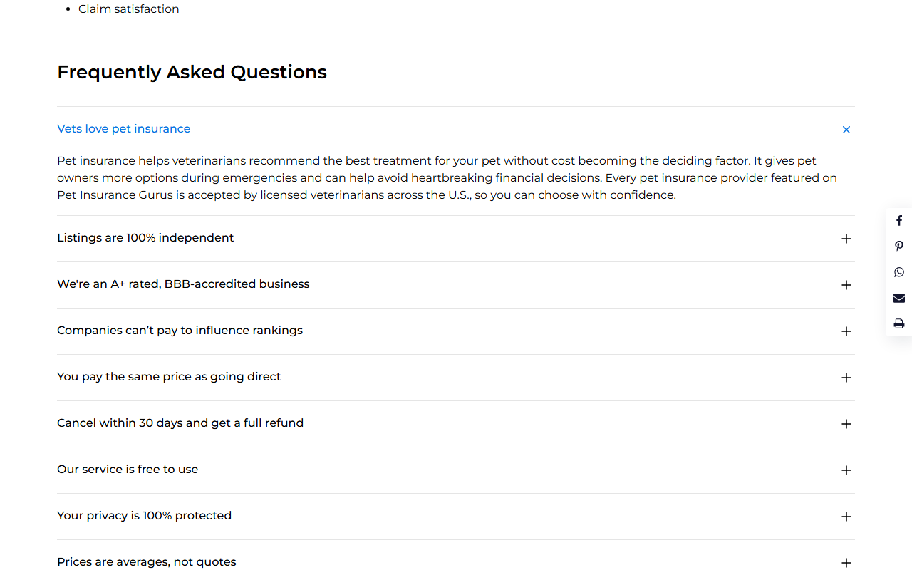
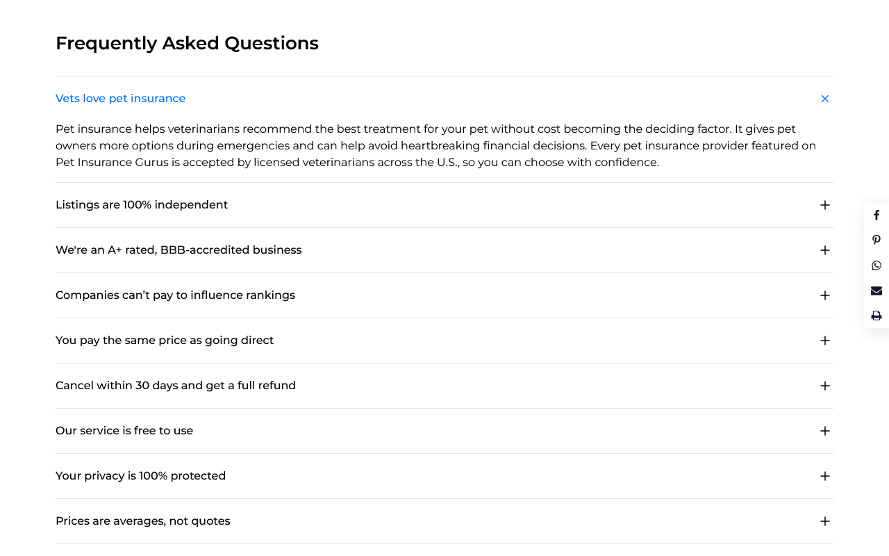
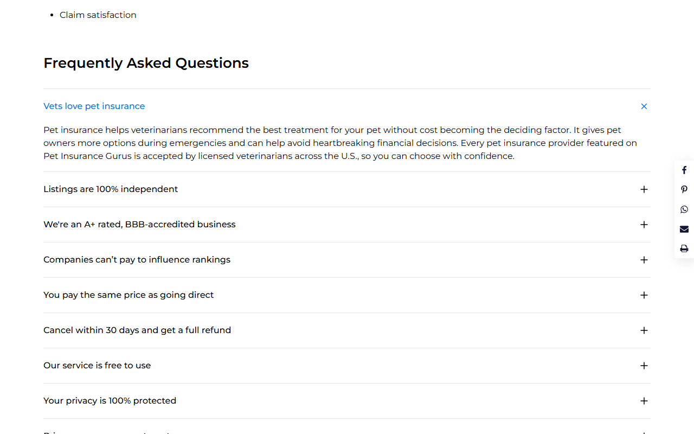
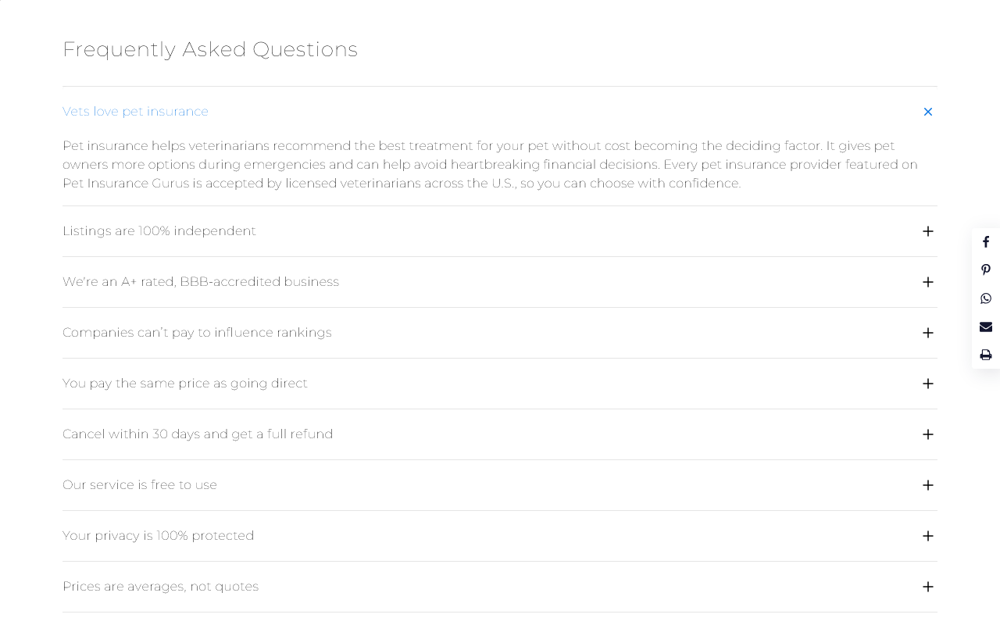
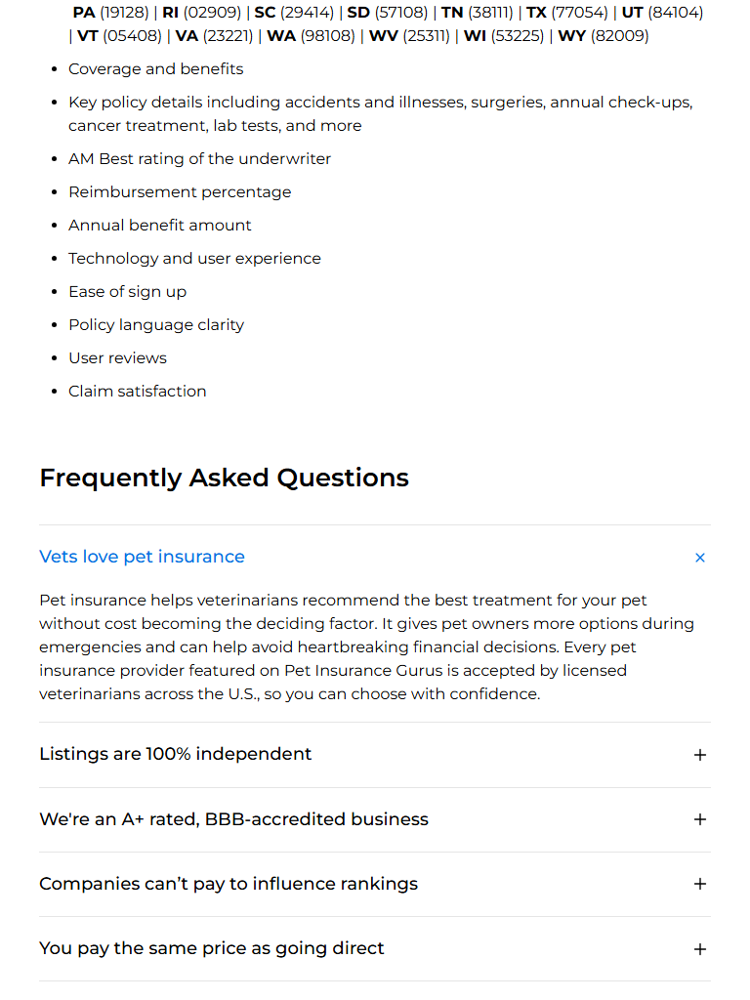
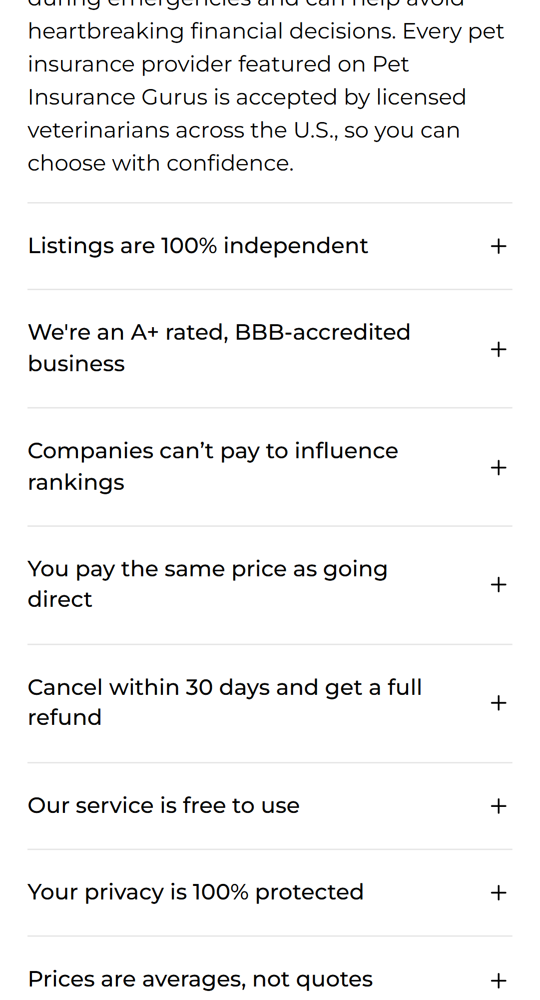
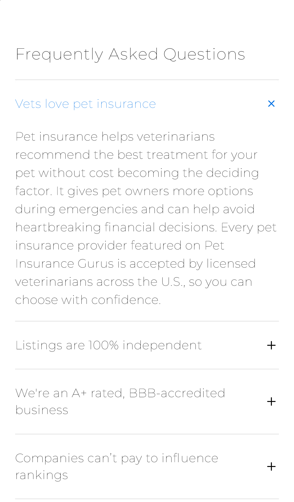
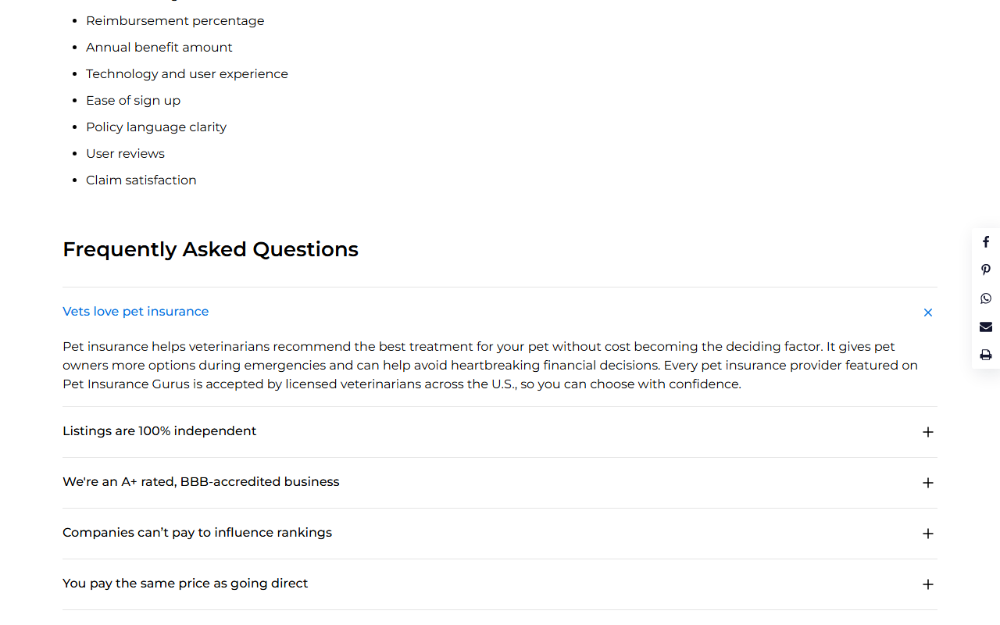

SWF137 is running with the variations ahead; SWF144 is the planned follow-up. It clones SWF137 (same control + two variations) and adds two new variations that are identical to SWF137's V1/V2 except the added FAQ is moved to the top of the FAQ list. This QA validates those two new variations against the live Convert preview builds.
| SWF137 behaviour | New FAQ appended as the last accordion item |
| SWF144 behaviour (this test) | New FAQ inserted as the first accordion item — insertAdjacentHTML('beforebegin', …) on .oxy-pro-accordion_item:first-child |
| Variation body class | cre-t-144 |
| Convert campaign | Cro_mode144 · experiment 100052493 |
| FAQ content editable in Convert | ✅ Yes — copy lives in the NewFAQ object at the top of the variation JS (not hard-baked in markup) |
| Purpose | URL |
|---|---|
| V1 preview (FAQ-at-top, no nav link) | https://petinsurancegurus.com/?utm_campaign=Cro_mode144&_conv_eforce=100052493.1000256519 |
| V2 preview (+ Vet Approved link) | https://petinsurancegurus.com/?utm_campaign=Cro_mode144&_conv_eforce=100052493.1000256520 |
| URL targeting #1 (Home) | https://petinsurancegurus.com/ |
| URL targeting #2 (Comparison) | https://petinsurancegurus.com/comparison/ |
| URL targeting #3 (Home alt) | https://petinsurancegurus.com/home/ |
| Tooling | Playwright 1.59.1 (headless), sequential (workers = 1) |
| Browsers / devices | Chrome Desktop · Firefox Desktop · Edge Desktop (msedge) · Safari Desktop (WebKit) · Mobile Chrome (Pixel 5) · Mobile Safari (iPhone 12) |
| QA method | Live Convert preview links (per client request) — variation confirmed injecting reliably headless on every URL |
| Client quirks handled | CRE-T-133 ZIP modal & cookie banner force-removed before interaction; async injection waited on with state:'attached' (no fixed sleeps) |
| Spec file | my-playwright-project/testing/cre-t-144-vet-faq-top.spec.js |
cre-t-144 body class#0272e4*The 6 skips are intentional platform gating, 1 per browser: the strict desktop scroll-position test is skipped on the two mobile devices, and the mobile-nav-visibility test is skipped on the four desktops. No coverage is lost.
| Browser / Device | Passed | Failed | Skipped | Result |
|---|---|---|---|---|
| Chrome Desktop | 43 | 0 | 1 | PASS |
| Firefox Desktop | 43 | 0 | 1 | PASS |
| Edge Desktop (msedge) | 43 | 0 | 1 | PASS |
| Safari Desktop (WebKit) | 43 | 0 | 1 | PASS |
| Mobile Chrome (Pixel 5) | 43 | 0 | 1 | PASS |
| Mobile Safari (iPhone 12) | 43 | 0 | 1 | PASS |
Injection & targeting cases run on all 3 URLs (Home, /comparison/, /home/). Behaviour cases run on the homepage (interaction is page-independent). All rows passed on all 6 browsers/devices unless a scope note says otherwise.
| Test case | Var | Scope | Result |
|---|---|---|---|
| Control: neither FAQ nor Vet Approved link injected | Control | Home | PASS |
body has cre-t-144 class | V1 · V2 | ×3 URLs | PASS |
| New FAQ is the FIRST accordion item (moved to TOP) | V1 · V2 | ×3 URLs | PASS |
| FAQ question text exact ("Vets love pet insurance") | V1 · V2 | ×3 URLs | PASS |
| FAQ answer paragraph exact match | V1 · V2 | ×3 URLs | PASS |
| Exactly one FAQ injected (no duplicates) | V1 · V2 | ×3 URLs | PASS |
| Vet Approved link NOT present | V1 | ×3 URLs | PASS |
| Vet Approved link present with correct text | V2 | ×3 URLs | PASS |
| Vet Approved cursor = pointer | V2 | ×3 URLs | PASS |
| Exactly one FAQ + one Vet Approved link | V2 | ×3 URLs | PASS |
| Accordion expands then collapses on click | V1 | Home | PASS |
Active header color = #0272e4 (matches existing FAQs) | V1 | Home | PASS |
| Opening new FAQ closes an open existing FAQ (mutual exclusion) | V1 | Home | PASS |
| Clicking Vet Approved opens the new FAQ | V2 | Home | PASS |
| Accordion expands on direct click | V2 | Home | PASS |
| After Vet Approved click, FAQ scrolled INTO viewport | V2 | Desktop | PASS |
| Vet Approved visible inline in nav (not hidden) + opens FAQ | V2 | Mobile | PASS |
Requested code check of the local variation files. As a clone of SWF137, this code inherits SWF137's flagged bugs — all still present. None of these block the "FAQ-at-top" objective, but BUG-A affects the V2 "position near the top" requirement.
scrollToEl() (js.js, ~L11–15) computes top = getBoundingClientRect().top - 100 and passes it to window.scrollTo(), but getBoundingClientRect().top is viewport-relative while scrollTo expects an absolute document offset — window.scrollY is missing. Confirmed live: clicking from the page top works, but after the user has scrolled the FAQ lands far off-target (measured 1635px below the top). Even from the top, the landing is imprecise across browsers (135px Chrome, 369px Edge) and erratic on mobile (−170px…+393px). This directly weakens the spec requirement "position the FAQ clearly near the top of the viewport." This is SWF137's BUG-01, still unfixed in the clone.
Fix: var top = window.scrollY + document.querySelector(el).getBoundingClientRect().top - 100;
js.js uses window.EventHandlerAddedTest137 (L142/144) as its "handlers already bound" flag inside a cre-t-144 test. While SWF137 and SWF144 both run on the site during the transition, they share this global — whichever loads second skips eventHandler(), breaking its accordion / Vet-Approved click handling. Rename to window.EventHandlerAddedTest144. (Client notes flag stale guard-variable names as the #1 clone-bug source.)
<li> has no inner <a>addVetApprovedLink() inserts <li class='cre-t-144-vetApprovedLink'> Vet Approved </li> with no anchor. Native nav items are <li><a>…</a></li>, so site li a styles don't apply. hello.css compensates (color/hover/cursor/mobile font-size) and it renders/behaves fine, but vertical alignment & padding may differ subtly from sibling nav items.
color declarationIn both vB.css (L2 & L8) and hello.css (L12 & L17), .cre-t-144-accordion_header sets color:#000000 then color:inherit; the second wins, so #000000 is dead code. Harmless but should be cleaned.
The file supplied as V1 (local_testing/Local2/variation/vB.js) actually contains WinkBeds cre-t-253 mattress-subtotal code (variation_name = "cre-t-253") — leftover from the previous commit. It is not the cre-t-144 FAQ variation. The deployed V1 (preview …519) is correct and was fully QA'd via the live link (FAQ at top, no Vet Approved link ✓). Only the local file is stale. experiment-js.js in the same folder is also unrelated (pay.com.au cre-t-08). Action: replace vB.js with the real V1 source for record-keeping. (V1 CSS vB.css is correct.)
V2 shown with the new FAQ opened via the "Vet Approved" link. Note the FAQ ("Vets love pet insurance") sits at the TOP of the FAQ list, above the existing questions.








window.scrollY to scrollToEl(). Without it, V2's "Vet Approved → near the top" behaviour is unreliable whenever the visitor has scrolled, and is imprecise even from the top on mobile.EventHandlerAddedTest144 to avoid a handler-binding collision while SWF137 and SWF144 co-exist during the transition window.vB.js with the true V1 source so the repo record matches what's deployed.<a> inside the Vet Approved <li> (BUG-C) and drop the dead color:#000000 (BUG-D).